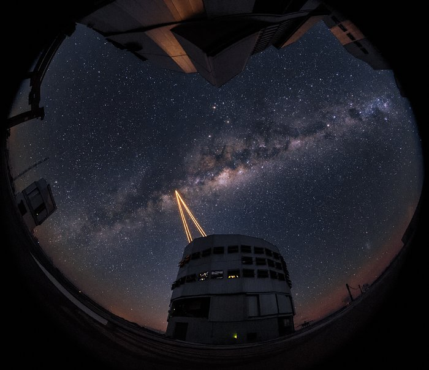

The great adventure
 Foto: ESOIt is no exageration to state that Chile, and particularly its Atacama region, are the stage for the greatest adventure of humanity of all times: the search for life in other planets. The greates ground-based observatories have been built here, ALMA, GEMINI, Magellan, Paranal, and CTIO. In the process of being built are the largest telescopes ever built: the 16-m diameter Great Magellan Telescope at Cerro Las Campanas, and the 39-m diameter ESO's ELT. Together with these telescopes is the development of new techniques to correct the effects of atmospheric turbulence which permits the acquisition of images of higher resolution that what is possible with space telescopes, current and futur ones.
Every day astronomers and engineers from all over the world travel to these observatories. They complete their work and fly back to their home countries. The data taken travel to Europe via optical fiber. What remains here in Chile? In addition to been a source of jobs and helping local comunities, these observatories have made an effort to give back up to 10% of the telescope time to scientists working in chilean institutions, and have given financial assistance to universities for fellowships and proyects. We, at the "Frontera de Universos, encuentro de mundos" proyect would like to do more.
Activities
Accion Solidaria, a not for profit corporation created by the people of Tocopilla, is carrying out a pilot proyect to bring science and scientists to the local communities of Tocopilla, Maria Elena, and Quillagua. We are starting giving classes and training to school teachers and their students. With them we are working toward the creation of support material for the teaching of astronomy. We believe that there is no better support material than the one that we have created ourselves (with the help of professional scientists).
 Evento Noche Zero en San Pedro de Atacama
Evento Noche Zero en San Pedro de Atacama
In our Viajes a las Estrellas, astronomers and engineers are hosted by the community to carry out activities for children of all ages together with their parents. We believe that the opportunity to in an event of this nature enrich us all, and give the families the chance to talk about subjects that may not be common in their homes. We believe this to be an opportunity to realize the slogan "education starts at home."
In the event we call Astronomía en el Pub, (Astronomy on Tap) a choosen scientist give a short talk in a Pub. The talk is geared to engage the participants in a dialogueand give them the cance to ask questions about life in the universe, black holes, the expanding universe, etc. It is a way to reach a wide spectrum of people. We also organize Fiestas de Estrellas (Star parties) in which the whole community is invited to observe the sky through telescopes that have been provided by the community itself.
Community support
 Exploratorio
Exploratorio
Para el proyecto Frontera de Universos el apoyo de la comunidad es de vital importancia: autoridades municipales, profesores, empresarios, vecinos, aficionados a la astronomía. Tocopilla ha sido un ejemplo: la Ilustre Municipalidad de Tocopilla financió la compra de un telescopio y ha puesto a nuestra disposición un bus para transportar profesores; el Club Internacional nos ha cedido el uso de su sede como un Exploratorio y sala de presentaciones; empresas privadas han financiado alimentación para los estudiantes que participan en estos eventos, transporte y estadía de astrónomos en la ciudad (E-CL, SQM); el Observatorio Europeo Austral, ESO, ha financiado un telescopio solar; la PDI nos ha ayudado para resolver un problema que alguna vez experimentamos. Nos queda mucho por realizar (y aprender) pero vamos bien encaminados. Nuestro sueño es que estas actividades inspiren y entusiasmen a niños y niñas.